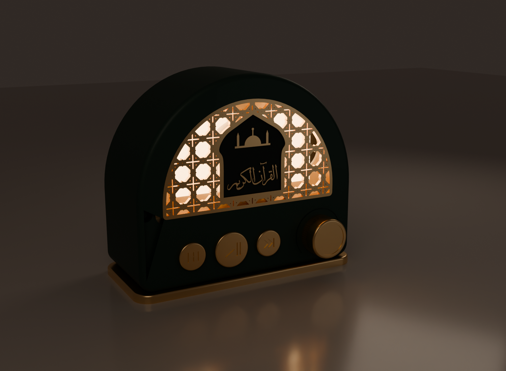
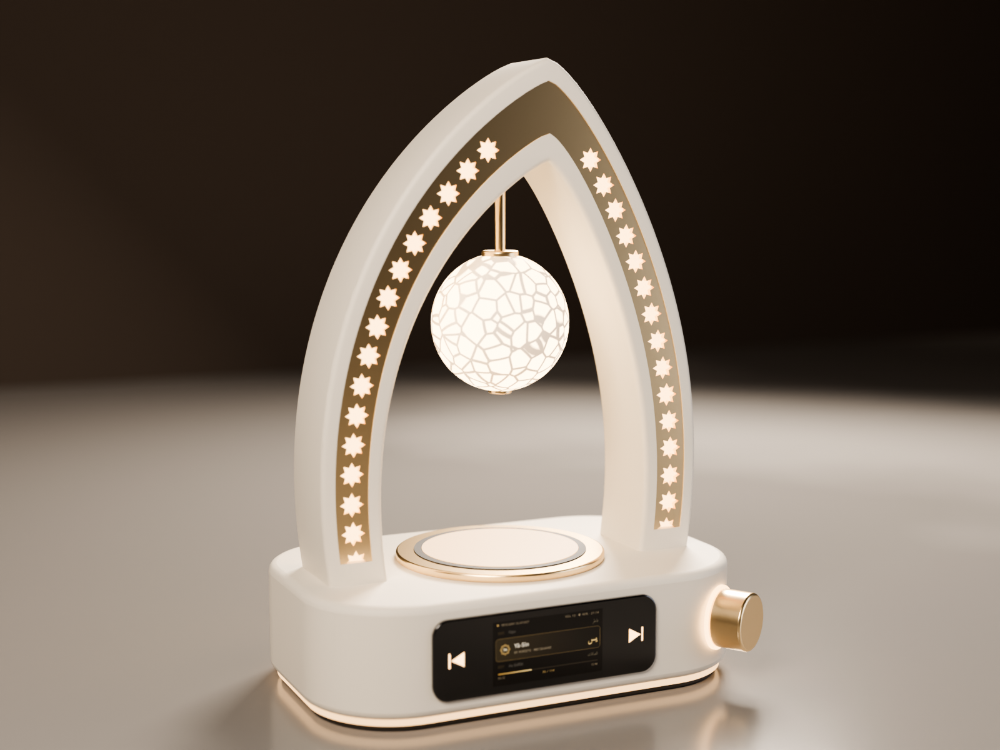
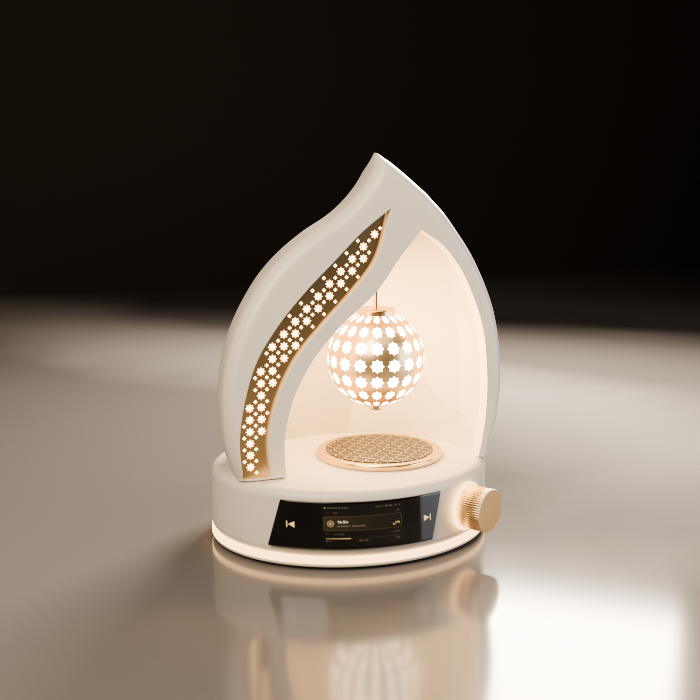
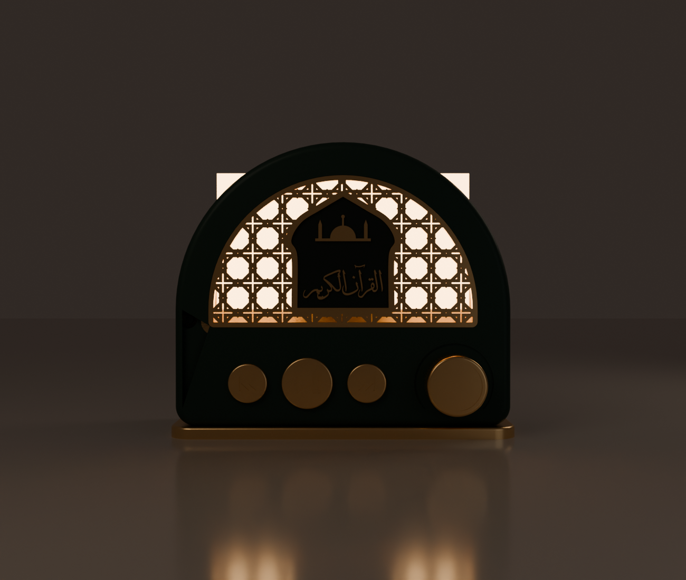
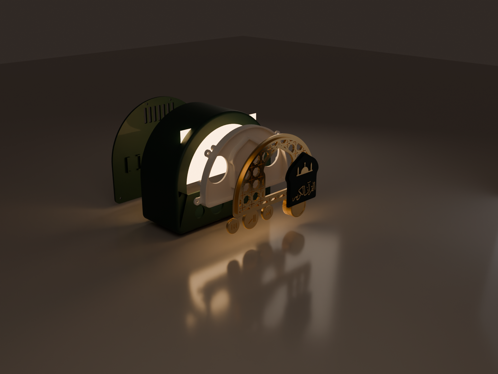

AYAH est d'abord un bel objet de décoration, puis un lecteur du Coran : les 114 sourates sont stockées sur carte microSD (lecture hors ligne), avec plusieurs récitateurs, un éclairage blanc chaud, des commandes physiques et, plus tard, un pilotage depuis l'application Ummati.
Après deux explorations (arche ajourée, puis niche en goutte), le projet est parti sur une forme « radio » en arche, inspirée de l'image de référence : plus simple à imprimer, plus lisible, et qui intègre naturellement la grille du haut-parleur.




| Image de référence | Version AYAH | Pourquoi |
|---|---|---|
| Boutons mécaniques | Touches dorées tactiles (ruban cuivre) | Pas de pièce mobile, plus fiable, coût quasi nul |
| 1 haut-parleur implicite | 2 × Ø40 sur un seul ampli | Son plus large, grille utilisée des deux côtés |
| Lueur décorative | LED adressables blanc chaud derrière la grille | Ambiance, mode nuit, animation douce |
| Assemblage inconnu | Dos démontable, inserts laiton, aucune colle sur l'électronique | Réparable, prototypable, industrialisable |
Vert profond & or (référence) · Noir mat & or · Ivoire & or. Le corps est la seule pièce qui change ; toutes les pièces « OR » sont communes.
| Fonction | GPIO | Remarque |
|---|---|---|
| Ruban LED (données) | 5 | via résistance 220–470 Ω |
| Touches tactiles ◀ / ⏯ / ▶ | 6 / 7 / 8 | broches tactiles natives du S3 |
| Ampli I2S : BCLK / LRC / DIN | 15 / 16 / 17 | |
| microSD (SPI) : SCK / MOSI / MISO / CS | 12 / 11 / 13 / 10 | |
| Encodeur : A / B / bouton | 39 / 40 / 41 | |
| LED de test (prototype) | 4 | firmware n°1 |
| À ne jamais utiliser | 35-37, 19-20, 0/3/45/46, 26-32 | PSRAM, USB, démarrage, flash |
ESP32 en Wi-Fi : pics ≈ 0,3 A · ampli à fort volume : ≈ 0,6–0,8 A · LED (10 à intensité limitée) : ≈ 0,2 A. Pic total ≈ 1,2–1,5 A sous 5 V → alimentation USB-C 5 V / 3 A recommandée. Dissipation inférieure à 3 W : aucun refroidissement nécessaire.
| # | Composant | Qté | Prix estimé | Statut |
|---|---|---|---|---|
| 1 | ESP32-S3 DevKitC N16R8 | 1 | 6–9 € | ✅ possédé |
| 2 | Ampli I2S MAX98357A | 1 | 1,5–3 € | à acheter |
| 3 | Haut-parleur Ø40 mm 8 Ω 2–3 W | 2 | 2–4 € | à acheter |
| 4 | Module microSD (SPI) | 1 | 0,5–1,5 € | à acheter |
| 5 | Carte microSD 16 Go (SanDisk / Samsung) | 1 | 5–8 € | à acheter |
| 6 | Encodeur EC11 avec bouton | 1 | 0,5–1 € | à acheter |
| 7 | Rallonge USB-C mâle → femelle à visser (data) | 1 | 2–4 € | à acheter |
| 8 | Ruban LED adressable (≈ 10 LED) | 1 | — | ✅ possédé |
| 9 | Résistance 220–470 Ω | 1 | — | ✅ possédé |
| 10 | Condensateur 1000 µF 16 V | 1 | 0,2 € | à acheter |
| 11 | Ruban cuivre adhésif (3 pastilles) | 1 | 2–4 € | à acheter |
| 12 | Fils silicone / Dupont | — | 0–3 € | en partie |
| + | Chargeur USB-C 5 V / 3 A | 1 | 6–10 € | optionnel |
| Article | Qté | Usage | Prix (lot) |
|---|---|---|---|
| Inserts laiton M3 (Ø4 × 5,7) | 10 | baffle 4, dos 4, socle 2 | 6–10 € |
| Vis M3 × 8 tête cylindrique | 6 | baffle 4, socle 2 | 5–8 € |
| Vis M3 × 8 tête fraisée | 4 | dos | |
| Vis à plastique Ø2,2 × 8 | 8 | bagues HP 6, barrette 2 | 2–3 € |
| Patins silicone Ø10 | 4 | sous le socle | 2 € |
| Poste | Montant |
|---|---|
| Électronique par appareil (hors chargeur) | 15–25 € |
| Visserie par appareil | ≈ 1–2 € |
| Filament (≈ 350–450 g de PLA) | 8–12 € |
| Coût matière par appareil | ≈ 25–35 € |
| Achats du prototype (lots et kits compris) | ≈ 40–60 € |
Non inclus : temps d'impression et d'assemblage, emballage, certification (voir § 9).
Fichiers : radio/stl/ (Bambu Studio) et radio/step/ (Fusion / FreeCAD). Générés par radio/ayah_radio.py (CadQuery) : toute cote se modifie en tête de fichier, puis on régénère.
| # | Pièce | Filament | Orientation | Dimensions (mm) |
|---|---|---|---|---|
| 01 | Corps | vert / noir / ivoire | face avant sur le plateau | 170 × 72 × 144 |
| 02 | Grille | or | face avant sur le plateau | 144 × 85 × 4,5 |
| 03 | Plaque calligraphiée | noir + or (à 3,3 mm) | collerette en bas | 57 × 61 × 4,3 |
| 04 | Baffle (porte HP) | blanc | à plat | 166 × 87 × 15,5 |
| 05 | Bague HP (×2) | quelconque | à plat | 54 × 52 × 5,5 |
| 06 | Dos électronique | comme le corps | face extérieure en bas | 165 × 139 × 17 |
| 07 | Barrette ESP32 | quelconque | à plat | 8 × 49 × 4,5 |
| 08 | Socle | or | à plat | 176 × 78 × 6 |
| 09 | Molette | or | dessus sur le plateau | Ø30 × 16 |
| 10–12 | Touches ◀ ⏯ ▶ | or | face gravée en haut | Ø20 / Ø26 / Ø20 |
| Étape | Pièces | Condition |
|---|---|---|
| 1 — maintenant | 08 socle · 02 grille · 03 plaque · 10–12 touches · 01 corps | Ne dépendent d'aucun composant |
| 2 — après réception | 04 baffle · 05 bagues · 09 molette · 06 dos · 07 barrette | Mesurer HP, EC11, ESP32, ampli, module SD, prise USB-C |
| Réglage | Valeur |
|---|---|
| Orientation | « Poser sur une face » (F) : grille → face avant ; plaque → grande face arrière |
| Filaments (AMS) | socle et grille : or · plaque : noir + plage de hauteur 3,3 → 4,5 mm en or |
| Préréglage | 0,12 mm Fine · 3 parois · 5/4 couches dessus/dessous · 15 % gyroïde |
| Supports / bordure | désactivés / aucune |
| Pied d'éléphant | 0,15 mm |
| Plateau | PEI texturé (mat) ou lisse (brillant) |
| Or « silk » | préréglage Bambu ; si besoin paroi extérieure à 60 mm/s |
| Composant | Emplacement | Fixation |
|---|---|---|
| 2 haut-parleurs Ø40 | Baffle, de part et d'autre du cartouche | Bague + 3 vis à plastique chacun |
| ESP32-S3 | Dos, en bas au centre | 4 plots, murets, barrette vissée |
| MAX98357A | Dos, à gauche | Bac à murets (emboîtement serré) |
| Module microSD | Dos, à droite | Bac à murets (accès : retirer le dos) |
| Prise USB-C | Découpe dans le dos | 2 vis de la prise |
| Encodeur EC11 | Façade, à droite | Écrou du canon (caché par la molette) |
| Touches tactiles | Façade, bandeau | Emboîtées ; cuivre dans la coupelle |
| Plaque calligraphiée | Derrière le cartouche | Plaquée par un rebord du baffle |
| LED | Face avant du baffle | Adhésif du ruban (pas de support dédié) |
Projet PlatformIO (C++ / Arduino) dans firmware/. Le test n°1 (LED intégrée, fondu PWM 20 kHz avec correction gamma, ruban adressable limité à 10 LED et 40 %, 3 boutons avec appui long, potentiomètre en volume) compile ; il reste à le tester sur la carte.
| Module | État |
|---|---|
| LED / ambiance / mode nuit | prototype écrit |
| Commandes (boutons → touches tactiles + encodeur) | à adapter |
| Lecture MP3 depuis SD + I2S | à faire (à la réception de l'ampli) |
| Navigation 114 sourates (annonce vocale, favoris) | à faire |
| Wi-Fi, configuration, API locale, OTA signée | à faire |
| Intégration Ummati | plus tard |
| Risque | Précaution |
|---|---|
| Condensateur électrolytique inversé | Bande « − » au GND ; tension ≥ 16 V pour du 5 V |
| 5 V sur une broche de l'ESP32 | Broches en 3,3 V uniquement ; potentiomètre sur 3V3 |
| LED ou ruban sans protection | Résistance sur chaque LED ; ruban jamais sur une broche ni sur 3V3 |
| Trop de courant sur l'USB | Limiter LED (nombre, intensité) ; une seule source d'alimentation à la fois |
| Redémarrages à fort volume (brownout) | 1000 µF + 100 nF au plus près de l'ampli |
| Prototype sur breadboard | Ne jamais laisser allumé sans surveillance (mode nuit compris) |
| PLA qui ramollit (55–60 °C) | Pas de soleil direct ni de voiture ; LED à puissance modérée |
| Cotes non vérifiées | Mesurer chaque composant avant d'imprimer baffle, bagues, dos, molette |
Des « Quran speakers » existent déjà (cubes et veilleuses LED, souvent 20–60 €, avec 114 sourates, télécommande, application). AYAH n'est donc pas inédit fonctionnellement : sa différence doit venir du design objet d'art, de récitations de qualité aux droits clairs, de l'intégration Ummati et de la personnalisation. Une fonction adhan aux heures de prière (calcul local) serait un fort argument. Positionnement envisageable : 89–149 €, à confirmer quand le coût de revient réel sera connu.
Dépôt : github.com/HARRMOS/ummati-deco — dossiers radio/ (version actuelle), firmware/, design/, cad/ (version niche).